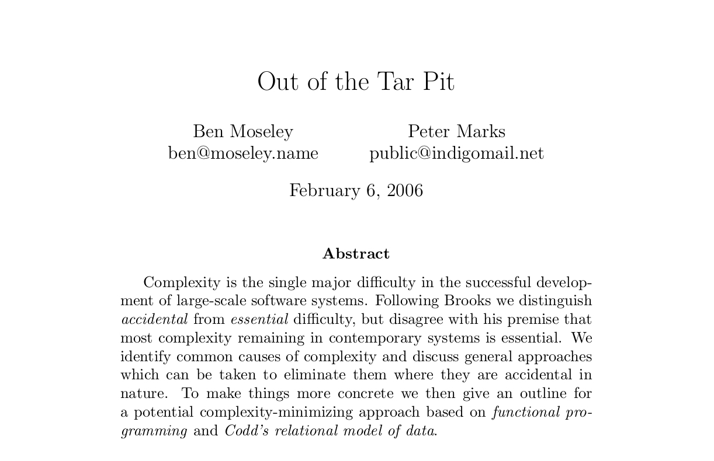

What we’ve done since forever
All about state
Statements change the state
An area where you can store some data
Register, Memory, Variable
Procedural programming
Group statements together in procedures
Object Oriented Programming
Group mutable state in objects
Programming with Values
No mutable state
Once “born” a value is completely determined
Programming with Pure Functions
Only relies on arguments, not on state
No observable side effects

Functional programming goes a long way towards avoiding the problems of state-derived complexity. This has very significant benefits for testing, as well as for reasoning.
1995 Ruby
2003 Scala
2005 F#
2007 Clojure
2012 Elixir
The future is multi-paradigm
FP as information model
OO for organization
Reference types to manage state
Actor model to manage concurrency
The main weakness of functional programming is the flip side of its main strength — namely that problems arise when (as is often the case) the system to be built must maintain state of some kind.
Current CPU limit: 3-4 GHz
< 2005, only single cores
Now: 8, 16, 32 cores, and more
New limit: Can our software parallelize?
OO has a flawed concept of
Value
State
Identity
Time
Behavior
This leads to accidental complexity
In OO only the most basic entities are immutable
Information consists of facts
What fact does a mutable object represent?
OO: There is only one river
FP: I can never step in the same river twice
It’s a Smalltalk
It’s a Bash
It’s a Perl
It’s a LISP
Most obvious trait: OOP
But also some functional: lambdas, map, reduce
But: no functional culture
Values + Pure functions are the exception
Recursion is discouraged
No generalized laziness
evaluation must be strict because pure functions are the exception
No functional batteries included (compose, curry, partial, juxt, etc.)
Limited built-in higher order functions
Mixing lambdas+blocks is awkward
False sense of security (is it threadsafe?)
Limited reuse and extension
data is invisible, use cases have to be thought of up front
Result: subclassing, redefining private/protected API, monkey patching
All because: I don’t trust you handling my (mutable) data
Values ⇒ Pure Functions ⇒ Persistent Data Structures
These go hand in hand, you have to have all three
Not revolutionary in itself, but huge enabler
Sharing is safe, always, with anyone
A value is always consistent: no need for read locks
STM, Compare-and-swap, Actors
Because of referential transparency
Doable in (J)Ruby
Because of referential transparency
Doable in (J)Ruby
Because of referential transparency
Doable in Ruby
It’s a dependency graph!
The system can reorder statements, optimize them away
Not doable in Ruby
The Reporting Problem
How to view a consistent snapshot of the world? Stop the world?
Presents!
Undo/Redo for free
Savepoints for free
Functional Ruby: it’s already happening
Data structures with value semantics
Immutable Struct: a dozen gems do this
Persistent Vector, Set, Map: Hamster, Clojr, persistent-data-structures
But, cultural problem: ruby core believes in “one true Array, one true Hash”
We risk creating isolated mini-ecosystems with their own data structures, libraries, semantics
Examples/Refactorings:
STM with Clojr